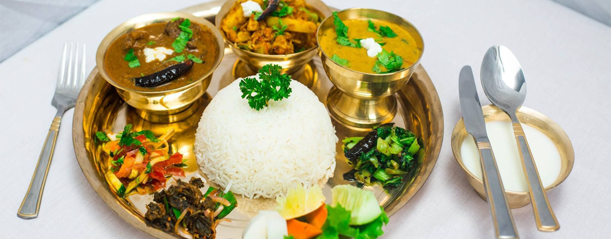

- 


サモサは、歴史的にはインド料理ですが、今はネパール料理の軽食のひとつになっています。調味料が似ていますので、ネパール料理の味はインド料理に大変似ています。具材には、ジャガイモ、タマネギ、エンドウ豆や、ゆでてつぶした具をクミンやコリアンダーシード、ターメリックなどの香辛料で味付けし、小麦粉と食塩と水で作った薄い皮で三角形に包み、食用油でさっくりと揚げたものです。
モモは、ネパール料理の中で大人気です。モモは安くて早く食べる事ができる料理として知られています。ネパールで肉と言えば水牛を使用すしますのでモモと言えば水牛の肉が入っているものを言います。又はチキン、マトンや豚を使用して作ってあるモモもあります。モモは、メインディッシュとして食べることができます。食べ方は色々ありますがトマトの漬物を付けて食べるのがおすすめです。
焼きそばは、野菜と少々肉または豆腐を入れた中華炒め麺です。チャウメインと言う名前は、タイシャンのチャウメイングのローマ字表記です。この料理は、中国のディアスポラ全体で人気があり、海外のほとんどの中華料理店のメニューに表示されます。特にインド、ネパール、英国、米国で人気があります。国によって味付けは変わりますので是非ネパールのチャウミンはご賞味ください。